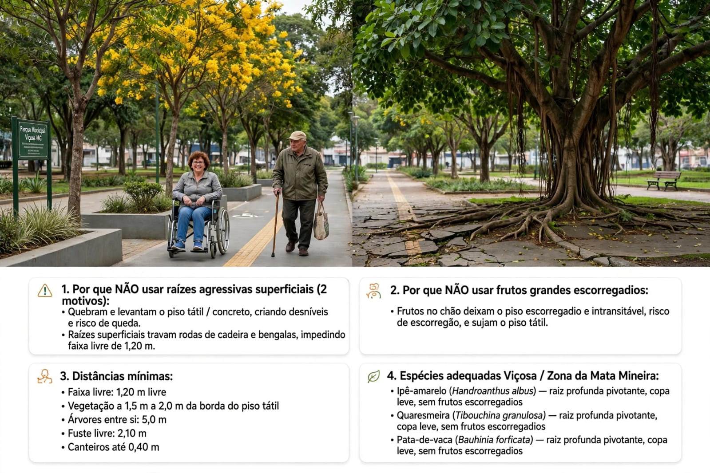
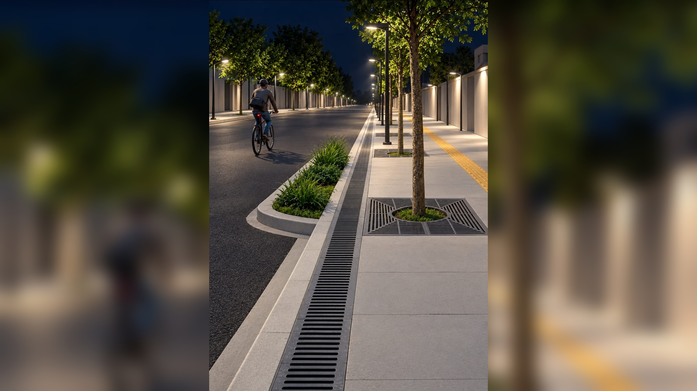
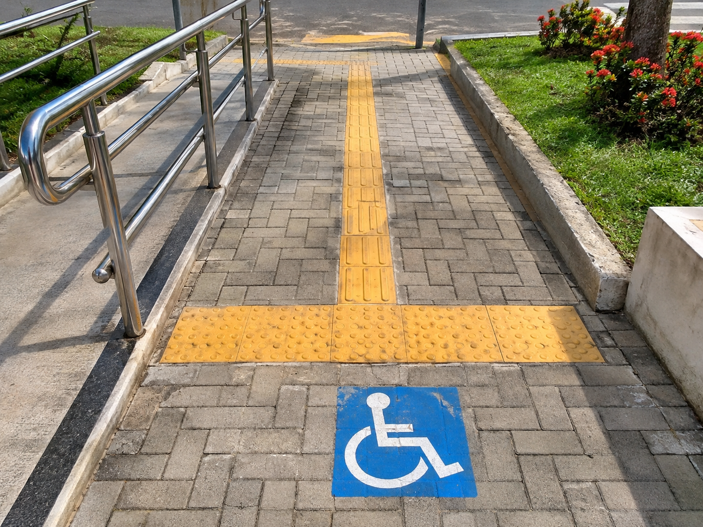
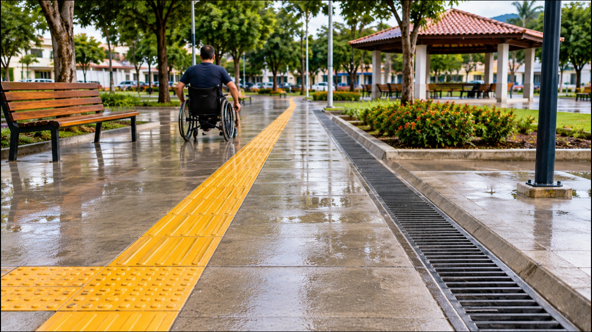

Paisagismo
nas Praças Públicas
A acessibilidade é essencial para construir espaços públicos mais inclusivos, permitindo que todas as pessoas utilizem as praças com autonomia, conforto e segurança.
O planejamento urbano deve considerar diferentes necessidades, garantindo circulação adequada, infraestrutura acessível e ambientes acolhedores para todos.
Vegetação Acessível e Paisagismo Urbano

A vegetação acessível e o paisagismo são fundamentais para promover espaços públicos agradáveis, seguros e inclusivos. O planejamento das áreas verdes deve considerar a escolha adequada das espécies, o desenvolvimento das raízes e a disposição das árvores e dos canteiros, evitando danos à pavimentação e obstáculos nas rotas de circulação.
De acordo com a ABNT NBR 9050:2020 (versão corrigida em 2021), a rota acessível deve manter faixa livre de circulação com largura mínima de 1,20 m e altura livre de 2,10 m, sem interferências que dificultem o deslocamento. Por isso, é importante evitar espécies com raízes superficiais agressivas, que possam levantar o piso, danificar a sinalização tátil e dificultar a passagem de cadeirantes e pessoas com mobilidade reduzida.
A escolha das plantas também deve considerar frutos, folhas e flores que possam cair sobre os caminhos, tornando o pavimento escorregadio. Recomenda-se utilizar espécies adequadas ao ambiente urbano, com raízes profundas, copas compatíveis com o espaço e baixa necessidade de manutenção. Na região de Viçosa e da Zona da Mata Mineira, algumas opções paisagísticas são o ipê-amarelo, a quaresmeira e a pata-de-vaca, desde que adequadas às condições locais de plantio.
A ABNT NBR 16537:2024, Seções 5 (sinalização tátil e visual no piso), 6 (sinalização tátil de alerta), 7 (sinalização tátil direcional) e 8 (assentamento da sinalização tátil), também deve ser considerada, pois estabelece critérios para a instalação da sinalização tátil no piso, que deve permanecer livre de interferências provocadas pelo crescimento da vegetação.
Dessa forma, o paisagismo acessível integra natureza, conforto ambiental e mobilidade, contribuindo para praças mais bonitas, funcionais e inclusivas, garantindo segurança e autonomia para todos os frequentadores.
Referências normativas
ASSOCIAÇÃO BRASILEIRA DE NORMAS TÉCNICAS. ABNT NBR 9050:2020: Acessibilidade a edificações, mobiliário, espaços e equipamentos urbanos. Versão corrigida: 2021. Rio de Janeiro: ABNT, 2021.
ASSOCIAÇÃO BRASILEIRA DE NORMAS TÉCNICAS. ABNT NBR 16537:2024: Acessibilidade — Sinalização tátil no piso — Diretrizes para elaboração de projetos e instalação. Rio de Janeiro: ABNT, 2024.
Iluminação Acessível

A iluminação é fundamental para garantir praças públicas seguras, confortáveis e acessíveis durante o período noturno.
O projeto busca proporcionar uma boa visibilidade por meio da instalação de postes, luminárias e pontos de luz estrategicamente distribuídos, iluminando calçadas, caminhos, áreas de convivência e espaços de circulação.
De acordo com a ABNT NBR 9050:2020 (versão corrigida em 2021), Seção 6.1.2 (iluminação), as rotas acessíveis devem possuir iluminação adequada, com nível mínimo de iluminância de 150 lux, medido a 1,00 m do chão. O planejamento da iluminação pública também deve considerar a ABNT NBR 5101:2024, que estabelece critérios técnicos para iluminação de vias e áreas destinadas à circulação de pedestres.
A iluminação deve ser planejada para evitar pontos escuros, sombras excessivas e ofuscamento, facilitando a orientação e a circulação dos pedestres.
Também é importante garantir que os equipamentos não prejudiquem a passagem de cadeirantes, idosos e pessoas com deficiência visual, mantendo as rotas acessíveis livres de obstáculos.
A utilização de luminárias de LED contribui para reduzir o consumo de energia e os custos de manutenção. Além disso, a limpeza e a revisão periódica dos equipamentos evitam falhas e garantem o funcionamento adequado do sistema.
Normas técnicas de referência
- ABNT NBR 5101:2024 – Iluminação pública.
- ABNT NBR 9050:2020 – Acessibilidade a edificações, mobiliário, espaços e equipamentos urbanos (versão corrigida 2021).
- ABNT NBR 8995-1 – Iluminação de ambientes de trabalho – Parte 1: Interior.
O objetivo é integrar iluminação, segurança e acessibilidade, proporcionando espaços públicos mais agradáveis, funcionais e seguros para todos.
Acessibilidade na Pavimentação Urbana

A pavimentação acessível é essencial para garantir segurança, autonomia e conforto na circulação de todas as pessoas nos espaços públicos. Os caminhos devem apresentar superfícies firmes, estáveis, regulares e antiderrapantes, sem buracos, obstáculos ou desníveis que dificultem o deslocamento.
A acessibilidade também depende da sinalização tátil, das rampas de acesso, dos corrimãos e da organização do mobiliário urbano. Conforme a ABNT NBR 9050:2020 (versão corrigida em 2021), a faixa livre de circulação deve possuir largura mínima de 1,20 m e altura livre de 2,10 m, permanecendo desobstruída. As rampas devem respeitar as dimensões e inclinações previstas na norma, garantindo condições adequadas de acesso. Bancos, lixeiras e demais equipamentos devem ser posicionados sem comprometer a circulação.
De acordo com a ABNT NBR 9050:2020 (versão corrigida em 2021), Seção 6.3.2 (revestimentos), os pisos devem apresentar características adequadas para garantir uma circulação segura. A Seção 6.3.3 (inclinação) estabelece critérios para as inclinações dos pisos, enquanto a Seção 6.3.4 (desníveis) apresenta requisitos para evitar dificuldades de deslocamento. A Seção 6.6 (rampas) estabelece os parâmetros necessários para garantir condições adequadas de acesso.
A ABNT NBR 16537:2024, Seções 5 (sinalização tátil e visual no piso), 6 (sinalização tátil de alerta), 7 (sinalização tátil direcional) e 8 (assentamento da sinalização tátil), estabelece critérios para a instalação dos pisos direcionais e de alerta, fundamentais para a orientação e segurança de pessoas com deficiência visual.
Nas praças, a integração entre pavimentação e áreas verdes também merece atenção. Raízes, canteiros e vegetação devem ser planejados para evitar danos ao calçamento e obstáculos nas rotas acessíveis. Além disso, a drenagem e a manutenção periódica contribuem para conservar a qualidade dos caminhos.
Dessa forma, a aplicação das normas técnicas e o planejamento adequado dos espaços públicos promovem ambientes mais seguros, acessíveis e inclusivos, permitindo que todos utilizem a praça com autonomia e igualdade de condições.
Referências normativas
ASSOCIAÇÃO BRASILEIRA DE NORMAS TÉCNICAS. ABNT NBR 9050:2020: Acessibilidade a edificações, mobiliário, espaços e equipamentos urbanos. Versão corrigida: 2021. Rio de Janeiro: ABNT, 2021.
ASSOCIAÇÃO BRASILEIRA DE NORMAS TÉCNICAS. ABNT NBR 16537:2024: Acessibilidade — Sinalização tátil no piso — Diretrizes para elaboração de projetos e instalação. Rio de Janeiro: ABNT, 2024.
Acessibilidade e Drenagem Urbana

A acessibilidade e a drenagem são fundamentais para garantir praças públicas seguras, confortáveis e inclusivas.
O projeto busca evitar poças e alagamentos por meio de canaletas, grelhas, ralos e bocas de lobo, direcionando corretamente as águas da chuva.
De acordo com a ABNT NBR 9050:2020 (versão corrigida em 2021), Seção 6.3.5 (grelhas e juntas de dilatação) e Seção 6.3.6 (tampas de caixas de inspeção e de visita), esses dispositivos devem ser instalados de maneira que não prejudiquem a circulação, a estabilidade e a segurança dos pedestres nas rotas acessíveis. A Seção 6.3.2 (revestimentos) também estabelece requisitos para as características dos pisos, contribuindo para uma circulação segura.
A ABNT NBR 16537:2024, Seção 5 (sinalização tátil e visual no piso) e Seção 8 (assentamento da sinalização tátil), também deve ser considerada para garantir que os dispositivos de drenagem não prejudiquem a instalação e a continuidade da sinalização tátil.
Esses dispositivos devem ser instalados sem prejudicar o piso tátil, as calçadas e as rotas acessíveis.
Também é importante manter os pisos nivelados, firmes e antiderrapantes, garantindo a circulação de cadeirantes, idosos e pessoas com deficiência visual.
A manutenção e a limpeza periódica da drenagem evitam entupimentos, acidentes e danos aos pavimentos.
Normas técnicas de referência
- ABNT NBR 9050:2020 – Acessibilidade a edificações, mobiliário, espaços e equipamentos urbanos (versão corrigida 2021).
- ABNT NBR 16537:2024 – Sinalização tátil no piso.
- ABNT NBR 10844 – Instalações prediais de águas pluviais.
O objetivo é integrar drenagem e acessibilidade, proporcionando espaços públicos mais seguros, funcionais e preparados para todos.